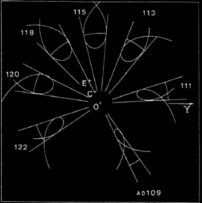
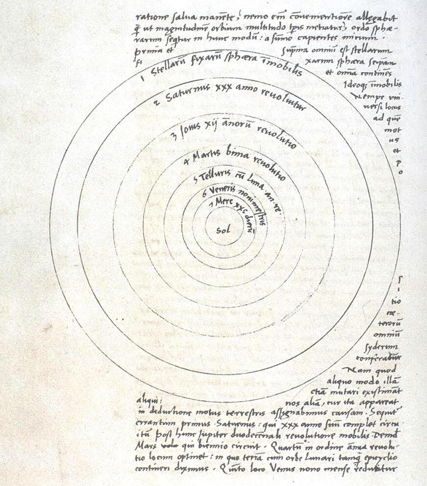

4,000 years ago
The Babylonians, an ancient people from the Near East, pick up where you left off. They start to meticulously record the position of particular celestial bodies on clay tables.
 This is such a cuneiform tablet. We have only been able to decipher these as of 200 years ago!
This is such a cuneiform tablet. We have only been able to decipher these as of 200 years ago!
3,000 years ago
Even you, the first human on earth, lacking any sophisticated tools to record your observations, notice that some of the bright spots in the sky differ from the rest. They do not twinkle, as do all the other stars, nor are they fixed with respect to the stars. The Ancient Greeks called these "wanderers", planētai (πλανῆται), the planets.
As humans, we are inclined to find patterns. One of the earliest models, which the ancient Greeks developed, posits that the sun moves around the earth with uniform speed.2
Planetary motion, however, turned out to be much harder to predict than the motion of the sun and moon. Look, for instance, at Mars, as seen from Earth:

These pictures were taken every 5 (or sometimes 6) days from 10/28/2011 until 07/06/2012.
Mars appears to slow down and to temporarily reverse its direction. This movement is called retrograde motion and it has puzzled astronomers for centuries. Assuming that the Earth was standing still at the center of the universe, they thought about various ways to explain it, starting out with simple geometric shapes.
Yet, this model does not even sufficiently explain something as simple as the seasons. Why are the winter months shorter than the summer ones? One possible fix that a scientist named Hipparchus came up with: moving the earth away from the center of the orbit.
But what about retrograde motion? Just putting Mars on another orbit similar to the one of the sun would not exhibit the behavior observed in nature. Therefore, the Greeks introduced a second class of orbits, so-called epicycles. As you can see below, each planet has a secondary orbit on a circle whose center itself is on an orbit around earth.
Now we can see, how — viewed from earth — retrograde motion appears as a visual artifact. The predictions of the model, however, still did not agree with the actual times and durations of the observed retrograde motion. This led the Greek scientist Ptolemy to further complicate the mechanism of epicycles, by adding another adjustment, the equant. You can learn more about it here.

The image above shows his predictions (the straigt lines) as well as the actual observed positions for Mars. As you can see, they are quite accurate. Indeed, Ptolemy's model remained state-of-the art for more than 1500 years...
400 years ago
Enter Nicolaus Copernicus. The Polish astronomer had a revolutionary idea. In his major work De Revolutionibus Orbium Coelestium, he centered the orbits of all planets around the sun! This broke with the assumption that the earth was not moving and in the middle of all planetary motion. On a more philosophical level, it made the earth a celestial body just like any other, a controversial step that angered his employer — the catholic church.
 While having about the same predictory power as Ptolemy's model, Copernicus' model is much closer to what we know about the universe today than any of the ones proposed by his predecessors. With further tweaking, and measurements — carried out by Tycho Brahe and systematized by his now more famous assistant Johannes Kepler — we have arrived at our current understanding of our place in the universe.
Today
As you have seen, the scientific method is an ever-evolving process: We observe the physical world around us, develop theories to predict it, test those theories and revise them if necessary in light of new evidence. Step by step, we inch closer to the truth. Maybe you can be the one who makes the next improvement, adding to all of human knowledge!
Image credits:
Opening timelapse |
Moon |
Cuneiform |
Retrograde movement imagery of mars |
Inspiration for orbital animations |
Ptolemy's prediction: SCIPHUNV 22 Chapter 3 |
Copernicus Manuscript
.jpg
){kind=link}
{kind=link}
{kind=link}

This work is licensed under a Creative Commons Attribution-NonCommercial-ShareAlike 4.0 International License.